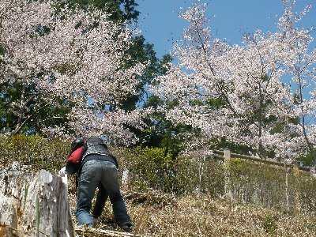
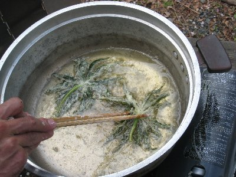
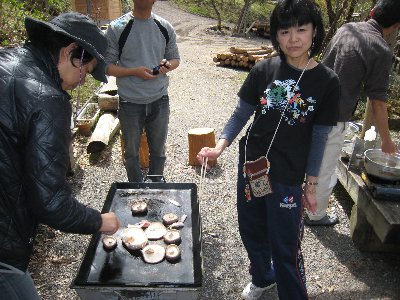

山菜採りin水窪 | 2010年4月 幹事：じゅんじゅん＆いづみ |
|---|---|
| 冬にワカサギ釣りをやった時に、「春には山菜が採れるよ」と言われていたので、水窪に山菜採りに行きました。 いつもの集合場所、水窪「国盗り」に10時集合。総勢10名＋じゅんじゅん、板橋さんです。 早速山の中に・・・・って、思ったらそんなに山の中ではなく、ちょっとした公園って感じな所。ここの斜面にワラビがなってるんだそうで。 まだ春手前って感じなのか、斜面は緑色ではなく、ちょっと枯れた色。ここに有るのかな〜なんて思いながら斜面を登り始め・・・あ、あった！ よく見ると先っちょがクルクルって丸まったワラビが、そこらに出てます！ 深い緑色で小さいのもあれば、だいぶ大きくなっているのもありますね。 斜面を落ちないように、ワラビを見逃さないように、慎重に登って行きました。 結構採れたね。こんなに採って大丈夫かってぐらいに。 | |
 このぐらいのワラビです |  桜が綺麗でした |
| ちょっと場所移動して、日陰ゾーンへ。 私は既にワラビ沢山取ったので、違うものを物色してると・・・・紅葉の実生が沢山出てます♪ 枯葉がたまり腐葉土のようになってるんだね。あたり一面選びたい放題！ 盆栽とまではいかないが、ちょと紅葉の鉢植えを作ってみたかったので、いくつか採取しました。 さて、採取した後は、お昼！ わんわん塾でバーベキューです♪ （今までも色々とお世話になっている、水窪町のボランティア団体「ここほれわんわん塾」。水窪の魅力を発信しています。今までは個人情報扱いで書いてなかったけど、別に悪いことではないし、同じく水窪の魅力を皆様にお伝えしたいと思い、今回記名することにしました。） （↑じゅんじゅん、これで合ってるかな？） | |
|  これ、破れ傘ね。 |  炭火焼きのヤマメがメチャ旨いんです |
| 今回、わんわん塾をHPで検索したところ、色々なイベントをやっていることが分かりました。ヤマメのつかみ取りってのもやってるんですね！ わんわん公園には、冬来た時は無かったトイレが完備されていました。トイレも自分たちで作っちゃうんだからすごいよね。 で、バーベキュー！ ご飯炊いて、板橋さんが事前に取ってくれていた、「破れ傘」の天ぷらも作りました。 破れ傘ってホントに破れた傘みたいなキク科の植物で、アル兄が傘が開いたような感じにあげてくれました。実に美味しい。 バーベキューも、美味しい美味しいで、残念なのは帰りの車を考え、ビールが飲めなかったことかな〜 これビール飲みながら食べたら、また格別だろうな〜 板橋さんがヤマメも塩焼きで焼いてくれて、毎度のことだけど柔らかで、ホクホクして骨まで美味しい〜んです。炭火でじっくり焼いてるしね。 食べるものが一杯あって、午後はず〜っと食べてました♪ ・・アレ、ナニヲシニ キタンダッケ？ | |
|  バーベキューでデカしいたけ焼き！ |  美味しゅうございました |
| 帰りには、わんわん公園の池に繁殖しているクレソンまでもらい、なんかお土産も一杯です♪ 今回は日帰りだったけど、やっぱり水窪は楽しいね♪ | |
| 写真＆コメント ｂｙ べっしー | |